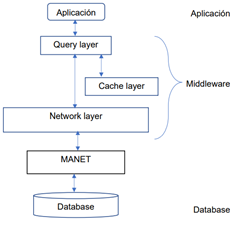
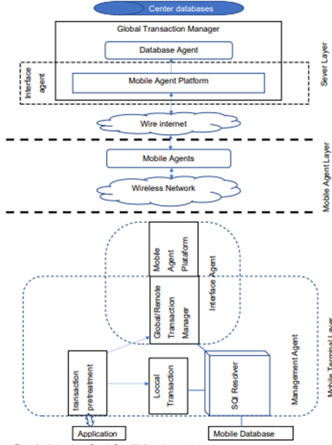

<!DOCTYPE html>
<html lang="es">
<head>
    <title>Unidad 2</title>
    <meta charset="UTF-8">
    <meta name="viewport" content="width=device-width, initial-scale=1">
    <link rel="stylesheet" href="csss.css">
</head>
<body>
    <div id="agrupar">
<header id="cabecera">
    <h1>1.1 ARQUITECTURA UNA BASE DE DATOS MÓVIL</h1>
    Hecho por: Juan Patricio del Ángel Velázquez
    <time>04/09/2021</time>
</header>
<section id="bd">
    <h2>
        1.1 ARQUITECTURA UNA BASE DE DATOS MÓVIL</h2>

   
        Un sistema distribuido de bases de datos móvil se compone de tres capas: la capa 
de aplicación, la capa de Middleware y la capa de bases de datos. A su vez, cada 
capa puede constituirse de varias subcapas.<br><br>
   
    <figure style="text-align: center;"> 
        </figure>
    
<br><br>
Funcionamiento del sistema: la capa de aplicación recibe la consulta o el query del 
usuario, es procesada en el dispositivo y pasa a la capa de Middleware donde es 
enviada a través de la red a la base de datos centralizada, una vez es finalizada, se 
devuelve al dispositivo móvil pasando otra vez por las capas mencionadas y es 
mostrada finalmente al usuario.<br><br>
La capa de Middleware se compone de tres subcapas, la subcapa de red, la capa 
cache y la capa de consultas o query. La subcapa de red es la encargada de
comunicarse con la base de datos centralizada. La subcapa de cache almacena la 
información que se consulta con frecuencia por parte del usuario, reduciendo así el 
tiempo de consulta del usuario y ofrece la disponibilidad de consultar la información 
cuando el dispositivo móvil este desconectado de la red. Esta subcapa de cache es 
automáticamente actualizada para mantener al usuario con la última información, 
pero es necesario recordar que cuenta con recursos limitados de almacenamiento 
y de ahí que deba tomar solo la información más útil para el usuario. Finalmente, 
está la subcapa de consulta, en la que se analiza cada query, su sintaxis y el tipo 
de consulta que se quiere realizar.<br><br>
Un nuevo modelo de arquitectura de bases de datos móviles basados en un agente
Se puede definir un agente como una clase de sistema computarizado o programa 
que trabaja en un determinado ambiente y puede rodearlo, resolviendo de forma 
remota e inteligente un problema. Cuando muchos agentes interactúan entre sí, se 
dice que se tiene un sistema multiagente.<br><br>
Para dar solución a la posible pérdida de conexión durante una transacción a una 
base de datos a un dispositivo, se ha diseñado un nuevo modelo de arquitectura, 
en el cual dispositivo cuenta con un agente que descompone el tiempo de vida de 
la transacción para obtener así una completa y optima consulta de la base de datos.
Este agente puede moverse de manera libre entre los diferentes nodos o host que 
componen esa red. La idea de este agente es que una vez esté instalado localmente 
en cada dispositivo, pueda interactuar con todos los recursos del sistema distribuido 
que se tiene. De manera sencilla, cada agente puede verse como una expansión 
del sistema tradicional cliente/servidor, y al tener más flexibilidad, eficiencia, 
confiabilidad e inteligencia para los cálculos distribuidos, va tomando más interés 
en los diseños.<br><br>
<figure style="text-align: center;"> 
    </figure>
<br><br>
Como se ve en la figura anterior se sigue componiendo en tres capas como el 
modelo clásico, pero con cambios significativos en las sub capas.<br><br>
Capa terminal Móvil: se compone de todos las terminales de los móviles que tienen 
la habilidad de realizar una consulta. Se compone de un administrador de cliente y 
de una interfaz de agente. El administrador básicamente analiza cada consulta que 
realiza el usuario a través de las aplicaciones y administrarlas en la base de datos 
local. Por su parte, la interfaz es la que administra las consultas que son globales o 
remotas y sirve de interfaz entre el cliente local y el servidor central de bases de 
datos. las funciones con más detalle de cada uno de los componentes de esta capa 
que se ven en el anterior diagrama son:<br><br>
1. Administrador de Agente: maneja los recursos locales del dispositivo. Así 
mismo analiza y procesa las transacciones que realiza el usuario y el manejo 
de las transacciones de la base de datos local. <br><br>
2. Interfaz de Agente: se encarga de transferir las consultas procesadas o los 
servicios a otros móviles en la base de datos móviles para generar eficiencia. 
Así mismo, sirve de recepción cuando otros dispositivos móviles realizan 
consultas a través del sistema.<br><br>
3. Unidad de Pre tratamiento de Transacción: inicialmente procesa las 
transacciones dadas por el usuario o las aplicaciones. Luego determina si la 
transacción puede ser manejada o no por la base de datos local, en caso de 
que no se pueda, envía la transacción al manejador del servicio 
remoto/global.<br><br>
4. Manejador del Servicio Remoto/Global: descompone la transacción en otras 
más pequeñas y las direcciona a otros agentes del sistema. También se 
encarga de ubicar los nodos más cercanos por donde pueda enviar las 
transacciones.<br><br>
5. Plataforma del Agente Móvil: Se encarga de la creación de los agentes 
mencionados anteriormente y de analizar la información que vienen de otros 
agentes móviles.<br><br>
Capa Agente móvil: en esta capa, residen los agentes que se encargan de enviar la 
información entre ellos, lo que constituye la parte lógica de la arquitectura. En estas 
visitas entre agentes se lleva códigos de consulta y de resultado. Esta capa se 
compone de 4 agentes que son:<br><br>
1. Agente Operante: se encarga de incluir la consulta de datos y actualizar los 
datos en todas las bases de los dispositivos móviles que conforman el clúster.<br><br>
2. Agente Transmisor: transmite los resultados de las consultas de bases de 
datos a los dispositivos que las solicitaron.<br><br>
3. Agente Pick-up: se encarga de adicionar un nuevo dispositivo a la base de 
datos móvil y hacer que se active.<br><br>
4. Agente Temporal: define los dispositivos que pueden funcionar como 
almacenaje temporal de las consultas, así como de guardar temporalmente 
información de la misma.<br><br>
Capa de Servidor: en esta capa llega a la base de datos central, en donde el agente 
de la base de datos realiza la transacción, y devuelve una respuesta al dispositivo 
o nodo que lo solicito. En ocasiones, algunos nodos pueden funcionar como servidor 
de acuerdo a la información que se esté manejando, debido a la replicación.
Características, ventajas y desventajas<br><br>
Todas las bases de datos móviles tienen una arquitectura similar, donde debemos 
distinguir una serie de elementos principales característicos de este tipo de 
sistemas:<br><br>
• Base de datos remota y SMBD que gestiona y almacena los datos móviles:
son las bases de datos que deben estar implementadas en los dispositivos 
móviles.<br>
• Plataforma de base de datos móvil: son bases de datos que puede usarse y 
administrarse desde ordenador portátil, PDA u otro dispositivo de acceso a
Internet, es decir, los dispositivos móviles en cuestión.<br>
• Enlaces de comunicación bidireccionales entre el SMBD remoto y el 
SMBDmóvil. Que pueden ser redes inalámbricas de distinta naturaleza,
comunicaciones vía satélite, etc.<br><br>
<h3>Ventajas:</h3>
Las principales ventajas que hemos detectado en las bases de datos 
móviles son las siguientes:<br><br>
• Permiten la movilidad de los usuarios, por lo que no es necesario estar 
físicamente ubicado en donde se encuentra la base de datos central para 
acceder a sus datos. Éstos pueden ser accedidos remotamente.<br>
• El mercado potencial de este tipo de bases de datos es bastante amplio, ya 
que multitud de empresas de todo tipo poseen trabajadores que necesitan 
acceder a los datos de la compañía mientras se encuentran en localizaciones 
remotas.<br>
• Estas bases de datos poseen un gran ámbito de aplicación ya que en 
principio cualquier base de datos relacional puede ampliarse para ofrecerlos 
servicios de las bases de datos móviles.<br><br>
<h3>Desventajas:</h3>
Los principales inconvenientes que hemos observado en las bases de datos móviles 
son los siguientes:<br><br>
• Los enlaces de comunicaciones (internet, red celular etc.) juegan un papel 
importante es el desarrollo de estos sistemas, por lo que su dependencia 
puede suponer un freno para ellos.<br>
• Los datos pueden estar replicados, por lo que consistencia y coherencia de 
los mismos son fundamentales y puede generar conflictos importantes.<br>
• El tratamiento de fallos es un aspecto delicado ya que, al tratarse de un 
entorno distribuido, los fallos de transmisión de datos deben de 
solucionarse y detectarse de forma eficiente para que no produzcan errores 
en la información tratada.<br>
• La capacidad de procesado de los dispositivos móviles son también un 
inconveniente importante y también hay que tener en cuenta que dicha 
capacidad no es la misma para todos los dispositivos<br>


</section>

<section id="hf">
    <h3>
        Bibliografia:
    </h3>
    AlfredoSantanaUrieta. (October de 2019). PDFCOOKIE. Obtenido de 
    https://pdfcookie.com/documents/2-arquitectura-de-base-de-datos-movilesmly0z3e17y20
    Nelson Ortiz, D. D. (2013). ARQUITECTURA Y DISEÑO DE BASES DE DATOS 
    MÓVILES. Revista TIA, 5–13.<br>
    Ortiz, N., Duarte, D., Mora, M., & Caicedo, F. (13 de Febrero de 2013). 
    ARQUITECTURA Y DISEÑO DE BASES DE DATOS MÓVILES. Recuperado 
    el 05 de Septiembre de 2021, de revistas.udistrital.edu.co: 
    https://revistas.udistrital.edu.co/index.php/tia/article/view/4296/601<br>
</section>

<footer>
<a style="text-decoration: none; color: white;" href="1.2.html" id="e2">
    Siguiente tema
</a>
</footer>

    </div>

</body>
</html>
